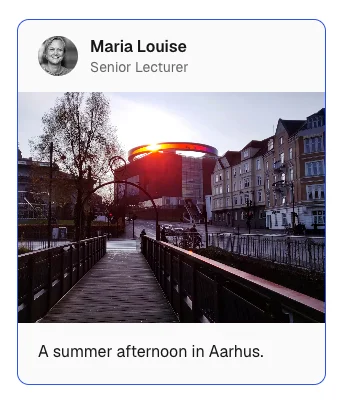
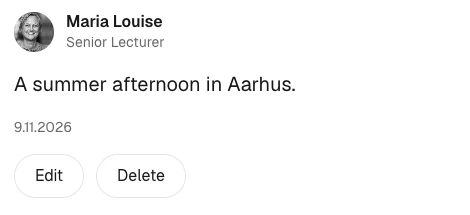
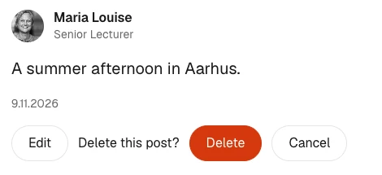
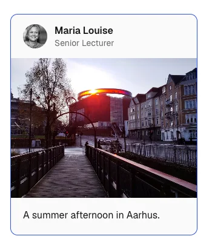
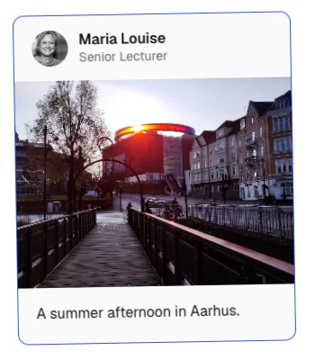

Jeg har gjort noget
Kortet løfter sig, knappen trykkes ned.
whileHover · whileTap
Motion for React · tokens · reduced motion · A/B/C
RACE

whileHover={{ y: -4 }}
reducedMotion="user"
Del 1Oplæg og demo
Del 2Jeres projekt
Når I skal bygge jeres interaktioner — i dag eller senere — starter det her.
Dan Saffer: Microinteractions · Aaron Walter: Designing for Emotion
Kortet løfter sig, knappen trykkes ned.
whileHover · whileTap
Knappen skifter til Saving …, mens data gemmes.
pending
Bekræftelsen glider ind, hvor du klikkede — og ud igen.
AnimatePresence
En fjedrende spring siger noget andet end en rolig fade.
type: "spring"
Projektets regel: Hvis en effekt ikke kan forklares ud fra brugerens oplevelse, skal den fjernes.
Skriv det i én sætning pr. del. Så ved I, hvad koden skal gøre — og I har jeres begrundelse til rapporten.
Samme app som 10. november — nu med Motion.
div til motion.divnpm install motion"use client";
import { motion } from "motion/react";motion. foran
<motion.div
whileHover={{ y: -4 }}
>
…
</motion.div>
Hvorfor "use client"? Hover og klik sker i browseren. Hold de animerede
komponenter små — så kan resten af siden blive på serveren.
whileHoverKortet løfter sigwhileTapKort og knapper trykkes nedinitial → animateBekræftelsen glider indAnimatePresence + exit… og ud igenlayoutFx en liste, der sorteresFem props dækker det meste. Det svære er ikke koden — det er at vælge, hvad der skal bevæge sig.
components/AnimatedCard.js · client
const MotionLink = motion.create(Link);
<MotionLink
href={href}
whileHover={{ y: -4 }}
whileFocus={{ y: -4 }}
whileTap={{ scale: 0.98 }}
>
{children}
</MotionLink>components/PostCard.js · server
<AnimatedCard href={`/posts/${post.id}`}>
<UserBadge user={post.user} /> …
</AnimatedCard>
Hvorfor smart? Kun kortets ramme er client — indholdet renderes stadig på serveren.
whileFocus giver samme feedback med tastatur.

components/SubmitButton.js · client
const { pending } = useFormStatus();
<motion.button disabled={pending} whileTap={{ scale: 0.97 }}>
<AnimatePresence mode="wait" initial={false}>
<motion.span
key={pending ? "pending" : "idle"}
initial={{ opacity: 0, y: 6 }}
animate={{ opacity: 1, y: 0 }}
exit={{ opacity: 0, y: -6 }}
>
{pending ? "Saving …" : "Save"}
</motion.span>
</AnimatePresence>
</motion.button>Motion fortæller, at tilstanden skifter — teksten fortæller hvilken. Animationen er aldrig eneste bærer af information.
window.confirm

Browserens dialog — ude af sammenhæng med siden
AnimatePresence

Bekræftelsen glider ind, hvor du klikkede
Hvorfor smart? Brugeren bliver, hvor de er. Med tastatur lander fokus på Cancel — det sikre valg.
components/DeleteButton.js · client
const [confirming, setConfirming] = useState(false);
<AnimatePresence mode="wait" initial={false}>
{confirming ? (
<motion.div
key="confirm"
initial={{ opacity: 0, x: 12 }}
animate={{ opacity: 1, x: 0 }}
exit={{ opacity: 0, x: 12 }}
>
Delete this post? …
</motion.div>
) : (
<motion.button key="delete" …>Delete</motion.button>
)}
</AnimatePresence>AnimatePresenceVenter med at fjerne elementet, til exit er færdig.
keyFortæller Motion, at det er et nyt element.
mode="wait"Det gamle går ud, før det nye kommer ind.
initial={false}Ingen animation, når siden indlæses.
Uden AnimatePresence forsvinder elementet med det samme — React fjerner det, før
exit kan køre.
Feedback på det, der allerede er i jeres UI
ojne.riv i public/Personlighed, der er svær at kode
Aftal navnene med designeren. State machine og properties i Rive skal hedde præcis det samme i koden.
index.html til en komponentindex.html fra guiden
const r = new rive.Rive({
src: "ojne.riv",
canvas: document.getElementById("rive-canvas"),
stateMachine: "State Machine",
autoplay: true,
onLoad: () => r.resizeDrawingSurfaceToCanvas(),
});
window.addEventListener("resize", () =>
r.resizeDrawingSurfaceToCanvas()
);I finder selv canvas og holder styr på størrelsen
components/Eyes.js
"use client";
import { useRive } from "@rive-app/react-webgl2";
export default function Eyes() {
const { RiveComponent } = useRive({
src: "/ojne.riv",
stateMachine: "State Machine",
autoplay: true,
});
return <RiveComponent aria-hidden="true" />;
}Hooken laver canvas, følger størrelsen og rydder op
Hvorfor smart? Samme tre værdier som i guiden. Musen og blinket klarer Rive selv med listeners — React skal bare vise filen.
npm install \
@rive-app/react-webgl2public/
ojne.riv
components/
Eyes.js// app/login/page.js
import Eyes from "@/components/Eyes";
export default function LoginPage() {
return (
<div style={{ height: 240 }}>
<Eyes />
</div>
);
}
Siden kan blive på serveren. Kun Eyes er client — ligesom
AnimatedCard. Giv forælderen en højde, ellers bliver øjnene 0 px høje.
240ojne.rivFilen ligger ikke i public/Flyt den — og start src med /Touch har ingen hover. Øjnene er pynt — det er i orden, at de står stille på mobilen.
npm install @rive-app/react-webgl2
"use client";
import { useRive, useViewModelInstanceBoolean } from "@rive-app/react-webgl2";
export default function LikeButton() {
const { rive, RiveComponent } = useRive({
src: "/like.riv",
stateMachine: "State Machine 1",
autoplay: true,
autoBind: true,
});
const { value: isLiked, setValue: setIsLiked } =
useViewModelInstanceBoolean("isLiked", rive?.viewModelInstance);
return (
<button onClick={() => setIsLiked(!isLiked)}>
<RiveComponent style={{ width: 48, height: 48 }} />
Like
</button>
);
}srcFilen fra Rive — læg den i public/.
stateMachineNavnet på state machine i Rive.
autoBindBruger view model'en fra Rive-filen.
"isLiked"Samme navn som property'en i Rive. Ændr værdien — Rive animerer.
Reduced motionRive følger det ikke selv — tjek med useReducedMotion.
Fire ting, der gør en animation klar til et rigtigt produkt.
duration/fast150 ms
duration/base250 ms
ease/out0.22, 1, 0.36, 1
app/globals.css
:root {
--duration-fast: 150ms;
--duration-base: 250ms;
--ease-out: cubic-bezier(
0.22, 1, 0.36, 1
);
}lib/motion.js
export const duration = {
fast: 0.15,
base: 0.25,
};
export const ease = {
out: [0.22, 1, 0.36, 1],
};
Hvorfor smart? Ret timingen ét sted, og hele produktet følger med.
Pas på enheden:
CSS bruger millisekunder, Motion bruger sekunder.
MotionConfig
// components/MotionProvider.js · client
<MotionConfig reducedMotion="user">
{children}
</MotionConfig>
// app/layout.js · omkring hele appen
<MotionProvider>{children}</MotionProvider>Ingen bevægelse — fades og farver bliver
useReducedMotion
const shouldReduceMotion = useReducedMotion();
// Reduced motion? Så variant A
const chosen = shouldReduceMotion
? "a"
: variant;Vælg selv et alternativ — her variant A
Test detDevTools → Rendering → Emulate CSS media feature prefers-reduced-motion
LydSkal kunne slås fra — og må aldrig være eneste bærer af information
transform og opacitywidth · heighttop · leftmargin · paddingKan hakke — især på mobilen
x · y · scale · rotateopacitylayout — Motion bruger transform for digGlat — browseren springer layout over
Kort og hurtig: 150–250 ms til feedback, så animationen aldrig venter på brugeren. Tjek i DevTools → Performance.

?variant=aMinimalKun kanten skifter farve?variant=bBalanceretLøfter sig 4 px
?variant=cEkspressiv8 px, drejer, fjedrer
Variant i URL'en, værdier i lib/motion.js. Så kan I teste med brugere: Hvornår
begynder delight at gå ud over usability?
MotionConfig omkring appen.
transform og opacity.
Brug branchen
motioninextjs-supabase-postssom reference. I vores app skal knappen Book tid give feedback, når man trykker, og vise status, mens bookingen gemmes.Brug vores motion-tokens og samme mønster: lille client component og
reducedMotion="user".Forklar, hvilke filer du ændrer og hvorfor.
Tjek bagefter: Kan I forklare effekten ud fra brugerens oplevelse?
Fortsæt med det, I er i gang med. Vejledning i grupperne undervejs.
Hvad skal motion gøre for brugeren i jeres produkt? Svaret kan I også bruge i rapporten.
Kør branchen motion i startprojektet, og brug den som reference. Eller sæt øjnene fra
NKKRs Rive-øvelse ind i jeres app.